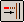
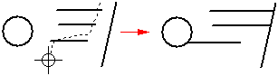
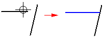
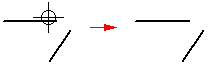
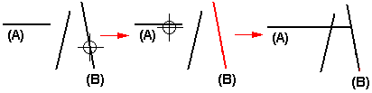

Extend an element
-
Choose the Extend To Next command

. -
Choose Sketching tab→Draw group→Extend To Next command .
-
Do one of the following:
-
To extend one element at a time, click each element near the end you want to extend. The selected element is extended to the nearest adjacent element.

-
To extend more than one element at the same time, drag the cursor over the elements near the end you want to extend. When you release the mouse button, all the elements are extended.

-
-
To preview the extend operation before you click, move the cursor over the elements. The software displays possible extensions in the highlight color.

-
If there is no possible intersection between the element you want to extend and any other element in the view, the command does not extend the element.

-
If the element you want to extend to is not the nearest element, you can specify the element to which you want to extend by holding the Ctrl key, and selecting the element first. For example, if you want to extend the horizontal line (A) to the angular line (B), hold the Ctrl key, and select line (B). Release the Ctrl key, and then select line (A).

-
If you prefer, you can use the Select Tool to select the elements you want to extend to and then run the Extend to Next command.